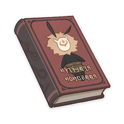

Mondstadt · Books & Literature
Handy Handbook of Hilichurlian
A Hilichurlian phrasebook given to the Traveler by Ella Musk during Version 1.5’s Mimi Tomo event. Its entries offer practical glosses with cautions about context and untested translations.

A field phrasebook from Mimi Tomo
The Handy Handbook of Hilichurlian is a quest-item booklet used during Version 1.5’s Mimi Tomo event. It is not a multi-volume book collection. The item description attributes it to the folklorist Ella Musk, and Ella gives the Traveler a copy after being rescued in the event’s opening quest.
Ella presents it as a quick reference for urgent conversations, not a complete language course. Her own item description and dialogue both qualify its reliability: she says its practical use still needs field testing, and tells the Traveler it should work only in principle.
What the handbook records
The entries cover greetings and etiquette, likes and dislikes, food terms, colors, approximate periods of the day, and a question for asking where something went. For example, the book groups words such as “mita” and “gusha” by common food or preference meanings, but tells the reader to pay attention to tone when deciding what a Hilichurl wants.
It also describes expressions for parts of the day and offers a way to ask about a location. Instead of claiming that every sentence can be translated word for word, the writer explains that some phrases depend on the speaker’s attitude and perspective. The map suggestion in the final note is part of the handbook’s practical, sometimes comic advice.
A guide that warns about its own limits
The book explicitly says it supplies only basic assistance and should not be treated as a standard textbook. Its notes often mark uncertainty, such as terms that vary by tone or a directional system the author chose not to fully catalogue. Those cautions are evidence about how this particular writer approached translation; they do not establish a complete grammar for every Hilichurl tribe.
The item description credits Ella Musk, but the opening dedication addresses an heir and granddaughter named Ella and jokes about the Musk family’s history. The game does not explain whether this is a family naming tradition, a playful attribution, or something else. The identity suggested by the dedication should therefore stay unresolved.
How it is used in Mimi Tomo
In the event quest, the Traveler consults the phrasebook while speaking with Hilichurls who are willing to communicate. Their requests lead the Traveler to offer suitable items; their later clues help determine when and where the Unusual Hilichurl will appear. The quest gives the short glossary a concrete role in one investigation rather than presenting it as a universal diplomatic protocol.
This handbook is separate from Draft Hilichurl Ballads, Ella’s distinct collection of three poem drafts. Read it as a fallible field aid: useful for the event’s exchanges, deliberately incomplete, and not by itself proof about the language’s full history, origins, or structure.
This is an original CoreGG reading guide, not an official HoYoverse article or a reproduction of the game text. Source links below identify the records used so you can check the original context.
Sources & references
Check these sources for the original game text and reference trail.